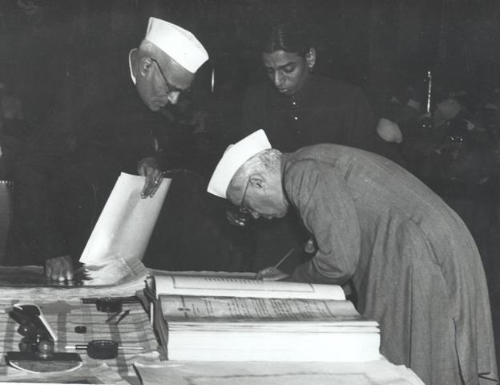

Science · Society
The Constitution’s Quietest Duty
Article 51A(h) asks every Indian citizen to develop the scientific temper. What that duty means on an ordinary day and in the classroom.

26 November is Constitution Day. It marks the day in 1949 when the Constituent Assembly adopted the Constitution, though it came into force only two months later, on 26 January 1950. Most of what gets written around this date is about our rights, and fair enough.
I want to write about something smaller. Tucked away in Part IV-A is a list of Fundamental Duties, and one of them has stayed with me ever since I first properly noticed it. Article 51A(h) asks every citizen “to develop the scientific temper, humanism and the spirit of inquiry and reform.”
These duties were not in the original text. They came in with the 42nd Amendment in 1976. The phrase “scientific temper” is older. Nehru used it in The Discovery of India back in 1946. As far as I understand him, he did not mean knowing a lot of science. He meant a way of thinking: wanting evidence, being willing to be corrected, and not accepting something just because an important person said it.
The part I like is “every citizen”. Not scientists, not teachers. Everyone.
So what does that look like in practice? Honestly, fairly ordinary things. Not forwarding the WhatsApp message about the spice that cures cancer until you have at least wondered who checked it. Asking the doctor what a tablet actually does, and not just when to take it. You do not need a degree for any of this. You only need to get into the habit of asking how we know.
I teach chemistry, so I naturally think about this in terms of the classroom. Chemistry asks students to learn a great many reactions, definitions and formulas, and they put real effort into it. That knowledge matters, and it is the base everything else is built on.
What I enjoy most, though, is when a student raises a hand and asks why a reaction goes one way and not the other, or how anyone measured this in the first place. Those questions make my day. Now and then I also tell students that we don't fully know the answer to something yet. They are usually surprised. I think it is good for them to see that science has edges, and that a textbook records what people have worked out so far, not the final word.
So this Constitution Day, by all means read the Preamble. But maybe read 51A(h) as well. And sometime this week, before you believe or share something, ask yourself once how you know it is true. It is a small thing. It also happens to be in the Constitution.
Sameer Saurav teaches chemistry at A.N.S. College, Nabinagar, Bihar. He holds a PhD from IIT Kanpur and a BS-MS in Chemical Sciences from IISER Kolkata, and writes on chemistry for general readers. More about him.